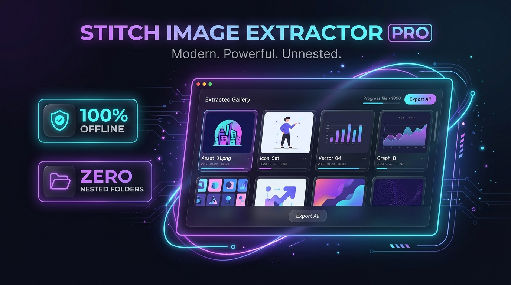

Google Stitch AI organiza cada exportación dentro de un árbol complejo lleno de subcarpetas vacías. Stitch Image Extractor PRO es una aplicación ligera que toma cualquier ZIP, aplana todas las imágenes a una galería visual instantánea y te permite descargarlas una a una o en un ZIP completamente limpio en 1 segundo.

Si usas Google Stitch AI a diario, reconoces este dolor de cabeza de inmediato.
Para conseguir 8 pantallas tienes que entrar a 8 carpetas distintas, copiar a mano y arriesgarte a que se sobrescriban archivos con el mismo nombre.
Miras tus diseños en una cuadrícula moderna, marcas las casillas de los que te interesan y los descargas con un solo clic.
Construido para diseñadores y desarrolladores que no tienen tiempo que perder.
Busca sin importar a qué profundidad estén las carpetas y descarta archivos basura del sistema (archivos .txt, .DS_Store o carpetas vacías).
Si Stitch genera dos imágenes con el mismo nombre en diferentes subcarpetas, la app las renombra automáticamente con sufijos para no perder nada.
Tus prototipos y diseños confidenciales nunca se suben a servidores externos. Todo corre en la memoria local de tu equipo.
Muestra las dimensiones de cada pantalla (1920×1080, etc.), peso de archivo y visor a pantalla completa para inspeccionar detalles.
Descarga solo las pantallas que elijas, guárdalas directamente en una carpeta de tu ordenador o empaqueta todo en un ZIP limpio.
No necesitas instalar Python, ni configurar dependencias, ni abrir terminales. Es doble clic y listo para trabajar.
Licencia de por vida para uso comercial y personal. Empieza a ahorrar horas de trabajo en cada proyecto de Google Stitch AI.
.bat)
diseño_1.png) para que nunca se sobrescriba ni se pierda una pantalla.